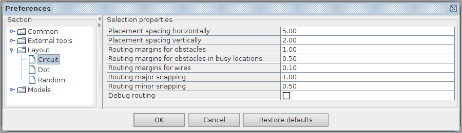
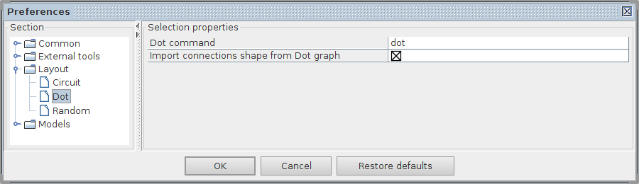
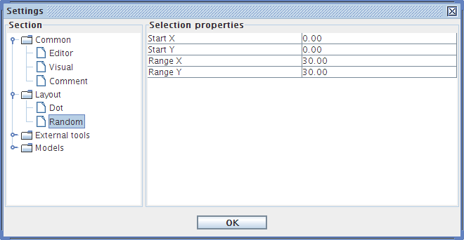

help:preferences-layout
Layout preferences
In Layout section of the Preferences window you can configure the parameters of graph layout engines.
Circuit

- Placement spacing horizontally – horizontal space between components. Default is 5.00.
- Placement spacing vertically – vertical spacing between components. Default is 2.00.
- Routing margins for obstacles – margin around components. Default is 1.00.
- Routing margins for obstacles in busy locations – margin around components in cluttered locations. Default is 0.50.
- Routing margins for wires – spacing between wires. Default is 1.00.
- Routing major snapping – major step for the snapping grid. Default is 1.00.
- Routing minor snapping – minor step for the snapping grid. Default is 0.50.
- Debug routing – visualisation of the routing information. It is off by default.
Dot

- Dot command – specify the command name to run, most likely it will be
dot. If the path to thedotprogram is not in the PATH environment variable, then you may need to specify the full path to this command as well. - Import connections shape from Dot graph (experimental) – tick this box if you want to import the connection splines from the Dot as approximate ploylines. Use this option with caution as the results are not always perfect.
Random

- Start X, Start Y – coordinates of the top-left corner of the randomly positioned nodes.
- Range X, Range Y – width and height of the area for randomly positioned nodes.